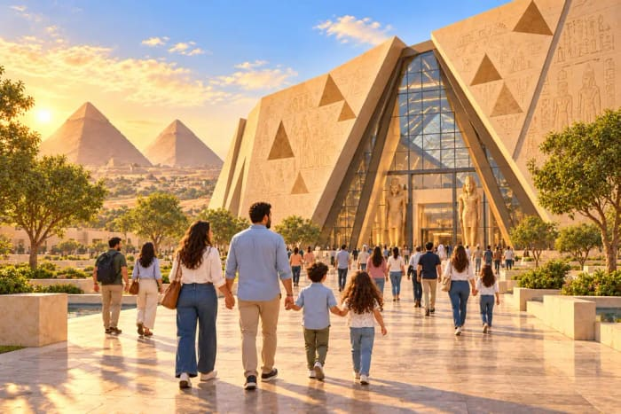
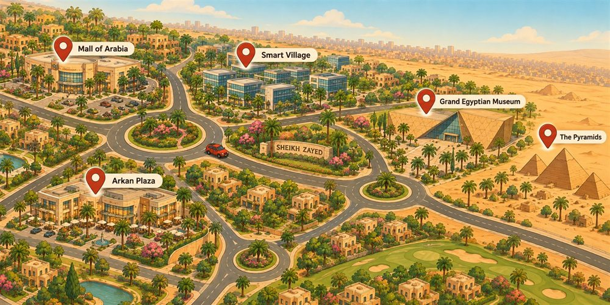
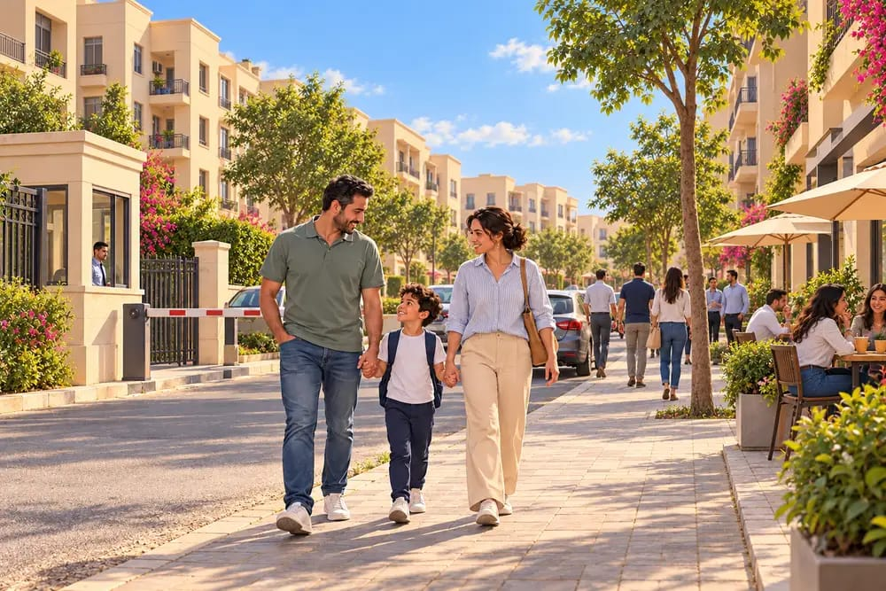
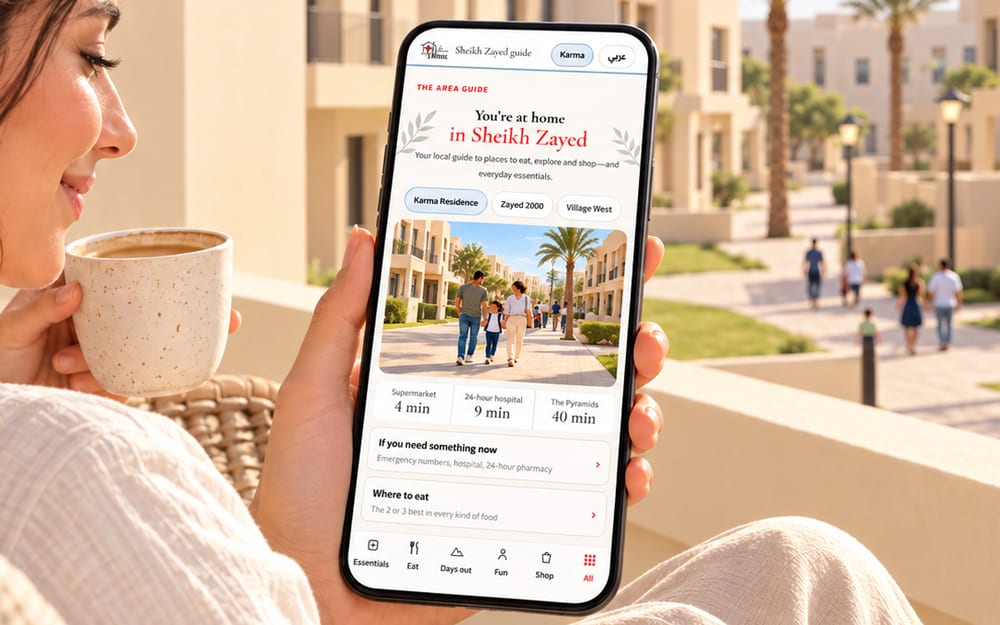
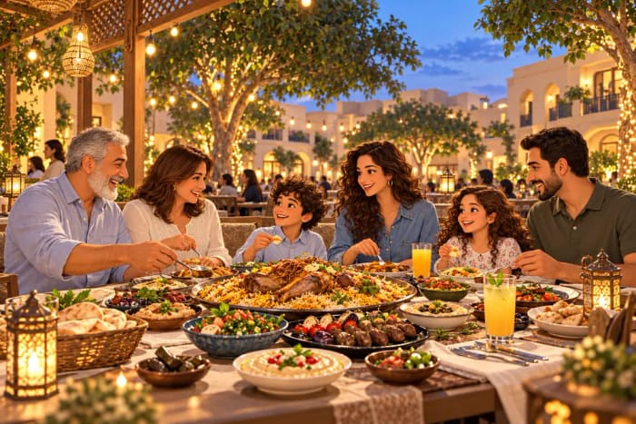
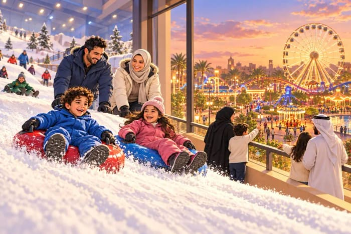
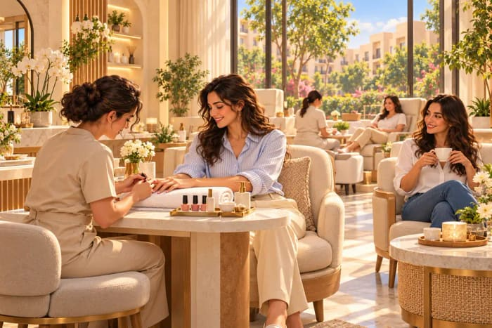
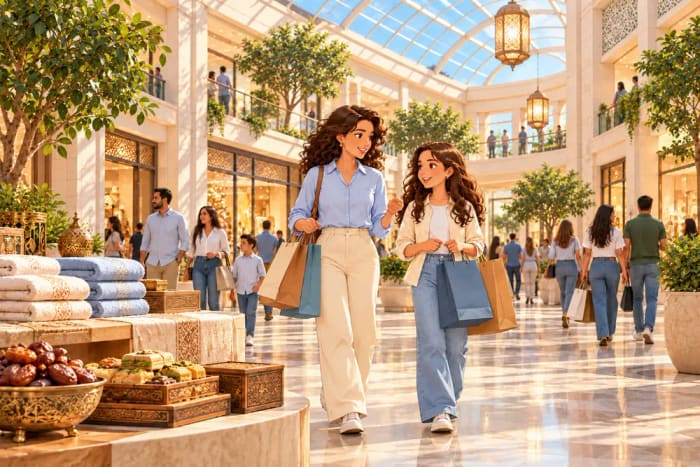
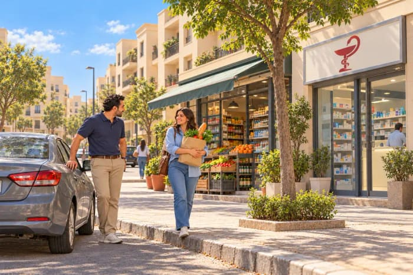

كم كل شيء قريب، وماذا تفعل بأيامك، وكيف تتنقّل. انتقل إلى: دليل المنطقة · لماذا يحب الضيوف المكان · دليلكم للشيخ زايد · التنقّل

الشيخ زايد على أطراف القاهرة: بعيدة عن الزحام بما يكفي لشوارع هادئة وحدائق، وقريبة من كل ما قد تحتاجه أو ترغب في زيارته. هذه أوقات قيادة تقريبية خارج ساعات الذروة من بيوتنا في كارما ريزيدنس، وقد يزيدها الزحام، وتجد الأوقات الدقيقة لكل بيت في صفحته:

ومطار القاهرة الدولي على بُعد ستين دقيقة تقريباً، بحسب الزحام.
مول العرب، ومول مصر، وأركان بلازا، وأمريكانا بلازا — علامات عالمية، وسينمات، ومطاعم راقية، وكنوز محلية، كلها على بُعد مشوار قصير.
على بُعد دقائق من سمارت فيلدج وكابيتال بيزنس بارك، وفي كل بيت إنترنت فايبر ومكان للعمل — وهو ما يفضّله القادمون للعمل والعاملون عن بُعد.
شوارع تظلّلها الأشجار، ومجتمعات مغلقة، وحدائق منسّقة. كمبوندانا مصنوعان لمشي الصباح وأمسيات الخارج، لا لضجيج المرور.
كمبوندات مؤمَّنة على مدار الساعة، ومستشفيات وعيادات ممتازة قريبة، ومدارس جيدة، وأشياء كثيرة يفعلها الأطفال على مهل.
حيّنا غير مشمول بجدول تخفيف الأحمال في مصر، فلا تنقطع إقامتك — وهو ما يستحق أن تعرفه إن كنت تعمل طوال النهار.
نحن على بُعد مشوار قصير، ونتكلّم العربية والإنجليزية والألمانية، وسيكون اتصالنا المباشر معك من لحظة حجزك.

الشيخ زايد هي المكان الذي تلتقط فيه القاهرة أنفاسها. شوارع واسعة وحدائق ومساء أهدأ — ومع ذلك هناك مطعم لكل مزاج على بعد دقائق من باب بيتكم، والأهرامات على مسافة صباح واحد. وهذه صورة أسبوع هنا.
مع تأكيد كل حجز يصلكم الدليل كاملاً: أفضل مكانين أو ثلاثة في كل نوع من الطعام، وبرامج أيام جاهزة، وزمن الطريق إلى كل مكان من بيتكم أنتم.


طعام مصري على طريقة البيت والمطبخ مفتوح على الصالة. ومقبلات لبنانية وشاورما سورية ومندي يمني وأرمني وسوشي وستيك وبيتزا تستحق الطريق. وأماكن فطور تأخذ الصباح كله، وقهوة مختصة، وحلويات شرقية بالوزن في علب مجهّزة للسفر.
الأهرامات والمتحف المصري الكبير، قريبان بما يكفي لتصلوا مع فتح الأبواب. وأهرامات سقارة ودهشور الأقدم والأقل زحاماً، وفي بعض الصباحات تكون لكم وحدكم تقريباً. والقلعة وشارع المعز ومصر القديمة، ومركب في النيل في الساعة التي تصير فيها المدينة ذهبية.

أماكن لعب مغلقة وصالات ألعاب وليزر تاغ، ومدينة ملاهٍ بألعاب حقيقية، وثلج حقيقي في قلب الصحراء. وفي يوم أهدأ، عصرية في مول حول نافورة، ومكان يجلس فيه الكبار بينما يلعب الصغار.

مساج أو حمام مغربي. ومانيكير، وحلاق لا يستعجل. وملعب بادل تحجزونه أونلاين للمساء. أو مقهى هادئ ويوم عمل لا يشبه أيام العمل.

اثنان من أكبر مولات مصر على بعد دقائق بالسيارة، وفيهما الأسماء العالمية تحت سقف واحد. وأقرب إليكم مولات الحيّ الصغيرة لاحتياجات اليوم. وذهب ومجوهرات وقطن مصري وهدايا تستحق مكانها في الحقيبة.

سوبرماركت على بعد دقائق، وصيدليات تفتح على مدار الساعة، ومستشفى بطوارئ ٢٤ ساعة. وماكينات صرّاف، ومسجد وكنيسة، ومغسلة وتنظيف جاف — كلها داخل الحيّ.
أوبر وكريم وإن درايف تعمل جيداً هنا. حمّل أحدها قبل وصولك وستكون جاهزاً.
مطار سفنكس الدولي على بُعد ٣٠ دقيقة تقريباً، ومطار القاهرة الدولي ٦٠ دقيقة تقريباً. احجز Cairo Airport Shuttle بسعر ثابت، أو اطلب منا ترتيب السائق الخاص الذي نستعين به نحن — أرسل لنا بيانات وصولك فقط.